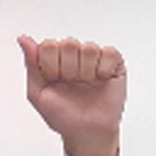

Escolha um sinal, ligue a câmera e faça o sinal igual ao exemplo. Letras e números são parados: é só segurar o sinal na câmera. Sinais com movimento (): faça o sinal inteiro na câmera e o SignEdu tenta reconhecer sozinho; se não reconhecer, use o botão Gravar sinal.
Faça a letra

Sinal com movimento: faça o sinal inteiro na câmera e o SignEdu tenta reconhecer sozinho. Se não reconhecer, clique em Gravar sinal e faça o sinal depois do 3, 2, 1.
Letra reconhecida
H, J, K, X e Z ficaram de fora porque têm movimento.